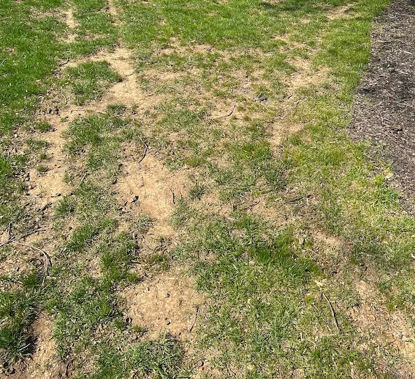
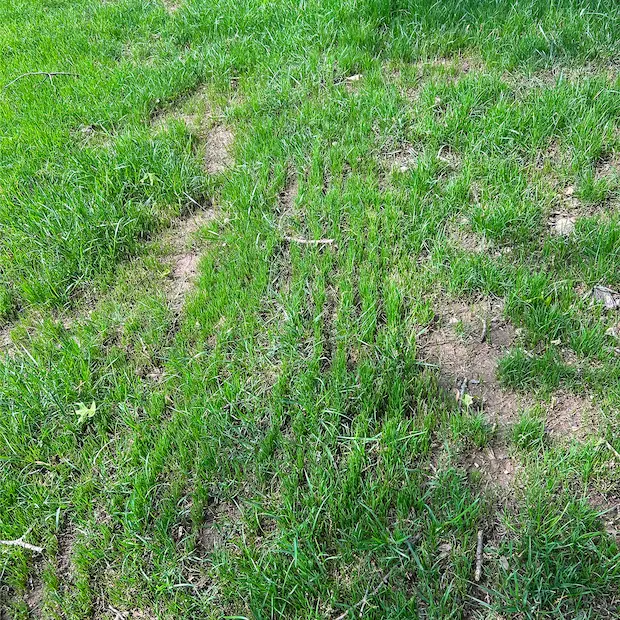
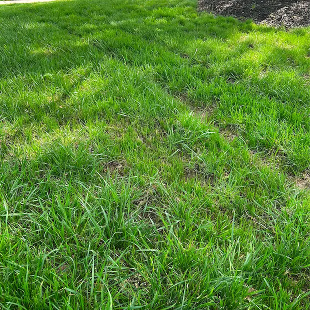
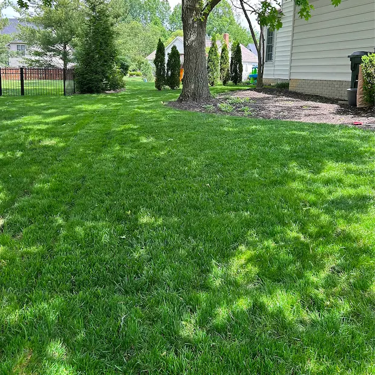
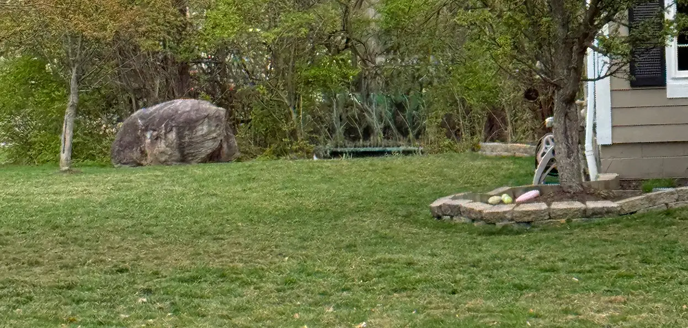
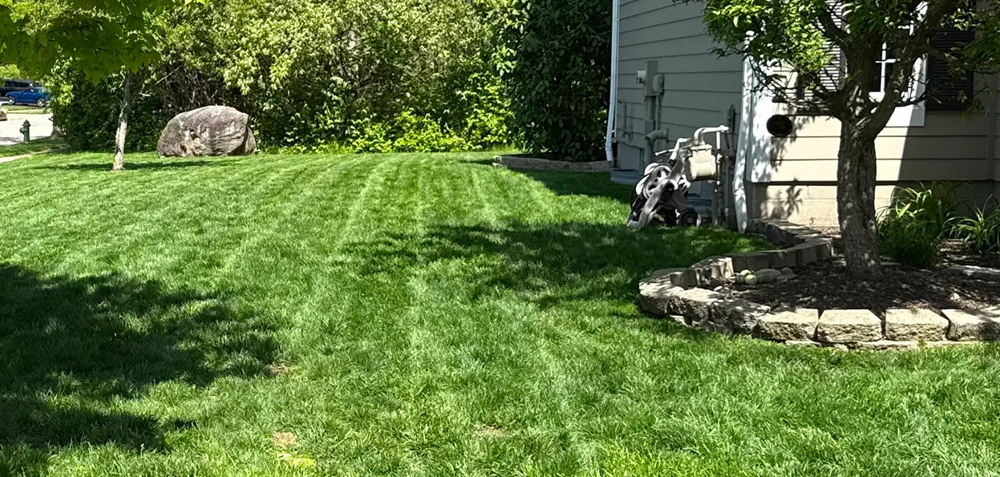
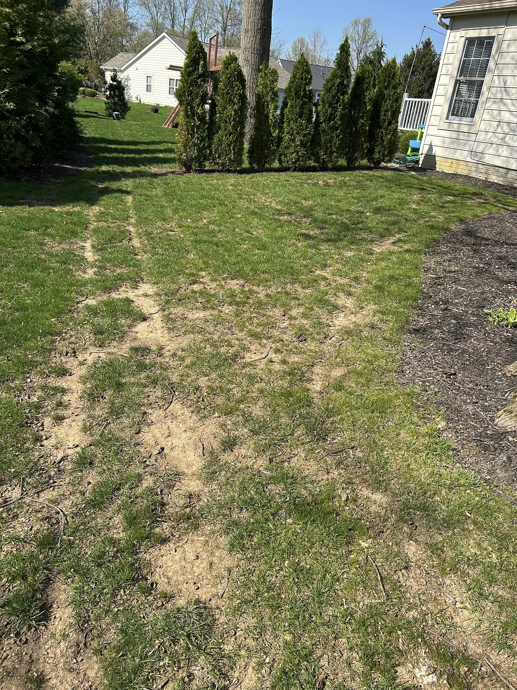
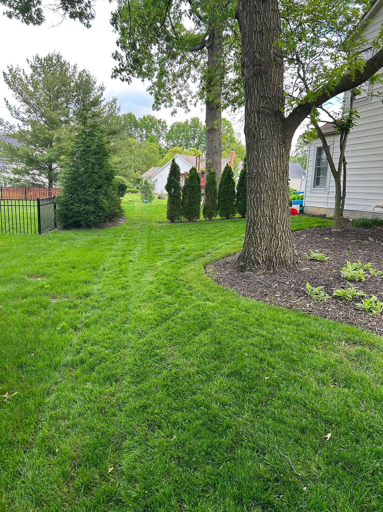
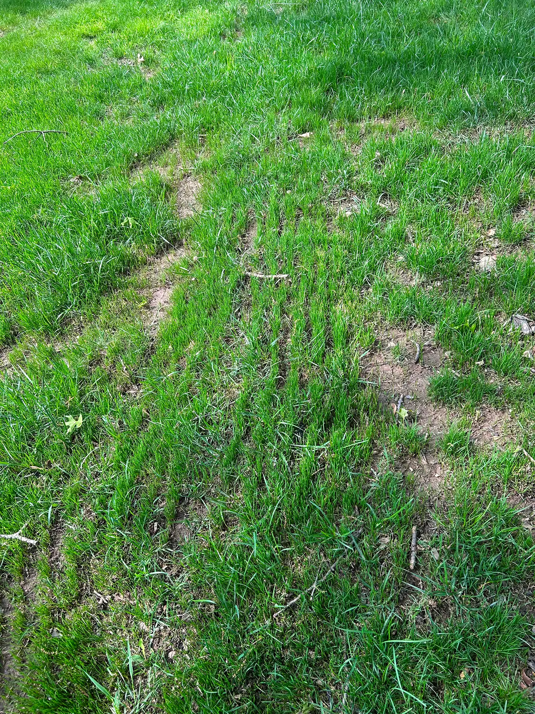
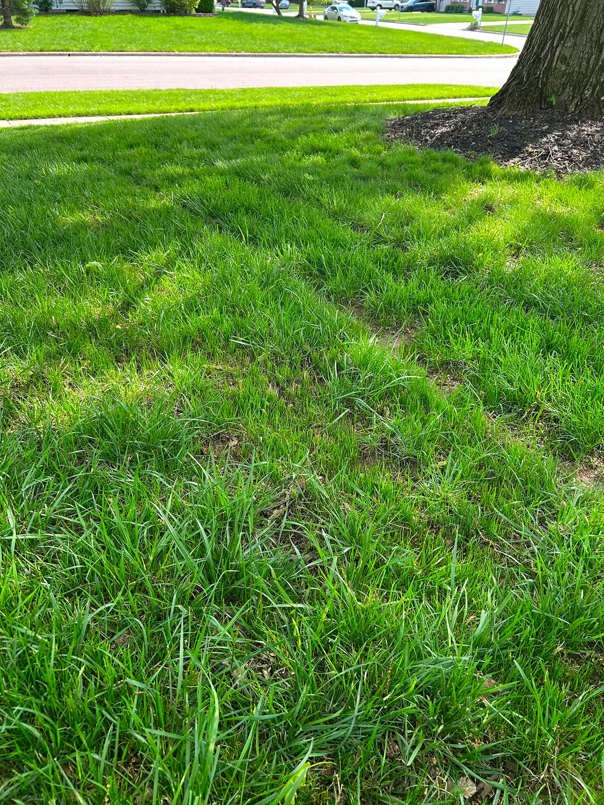

LAWN RENEWAL IN THE COLUMBUS AREA
Fall Is the Best Time to Fix a Thin Lawn. Let’s Fix Yours.
Slit seeding places new grass seed directly into the soil at the ideal time of year — so your lawn comes back thicker, greener, and stronger next spring.
Now booking fall seeding — limited slots, mid-August through September.
Why fall is the window: Warm soil and cool air are ideal for germination, weed competition is low, and new grass has time to root before winter — so it fills in fast and comes back strong in spring. Miss this window and the next best time is a full year away.
Most lawns run $600–$1,400.
Germination guarantee: Follow the simple watering plan I give you, and if your new grass doesn’t come in, I’ll make it right.
Get My Free Quote
Real results
Lawn Fill-In Progression
Before → during growth → filled-out result



New blades appear first in patches, then connect into fuller turf coverage.




During: New turf fill-in
The thin spots start showing new blades, then the cover closes in as growth thickens.


Improved seed-to-soil contact helps new grass establish and create fuller, healthier lawn coverage.
Locally owned in GalenaLicensed Ohio applicatorGolf-course-grade slit-seeding equipment
How it works
My proven three-step lawn renewal process
Each step is designed to improve seed-to-soil contact, promote stronger growth and reduce common lawn problems.
Dethatch the lawn
I remove matted grass and excess thatch so seed, water and nutrients can reach the soil more effectively.
Plant with precision
Golf-course-quality equipment places seed directly into the ground at a consistent depth for better germination.
Feed & protect
Starter fertilizer fuels the new seedlings, and I’ll walk you through the watering plan that makes it take — the same plan the germination guarantee is built on.
Services
Professional lawn renovation services
Whether your lawn needs a complete renovation or attention to problem areas, I offer services designed to restore healthy, thick, green grass.
Fall Seeding
The ideal season for establishing strong new grass with cooler temperatures and excellent growing conditions.
Spot Seeding
Repair bare patches, pet damage, traffic wear, and other thin areas without renovating the entire lawn.
Lawn Dethatching
Remove excessive thatch buildup to improve airflow, water penetration, and seed-to-soil contact.
Also ask about spring seeding for early-season projects.
Serving the greater Columbus area
Frailey Lawn Renewal provides slit seeding, slice seeding, overseeding, dethatching and lawn renovation in Columbus, Westerville, New Albany, Powell, Dublin, Galena, Sunbury, Lewis Center and Blacklick.